Verkefni 3 - 3D prentun og 3D skönnun
3D prentun
3D prentunar hlutinn af verkefni 3 snérist um það hanna og búa til hlut sem einungis var hægt að gera með 3D prentara miðað við þau tæki og tól sem voru tilstaðar. Mig langaði að nýta þetta tækifæri og búa til eitthvað sem væri hægt að nota í stað þess að búa til flókið form. Mér datt í hug að búa til laufabrauðsjárn þar sem við fjölskyldan eigum bara eitt laufabrauðsjárn. Einnig er vert að nefna að laufabrauðsjárn eru handgerð og þar afleiðandi mjög dýr en ég var búinn að sjá að það er verið að selja 3D prentuð laufabrauðsjárn hér á landi. Fyrsta sem ég gerði var að skutlast til ömmu og fá laufabrauðsjárnið hennar í láni til að sjá betur fyrir mér hvenig hjólið er og fá grófar mælingar, t.d. hvað hjólið er breidd og hversu langt handfangið er.
Næst var að teikna upp hlutinn en ég gerði það í Inventor þar sem ég er vanastur því, gott er að nefna að það er ekkert mál að færa hluti úr Inventor yfir í það forrit sem notast er við að 3D prenta. Þar var í sjálfum sér ekki flókið að teikna upp laufabrauðsjárnið nema að ná tönnunum á hjólinu en til þess að ná þeim þá þurfti ég að notast við Coil skipunina til að ná þeim fram.
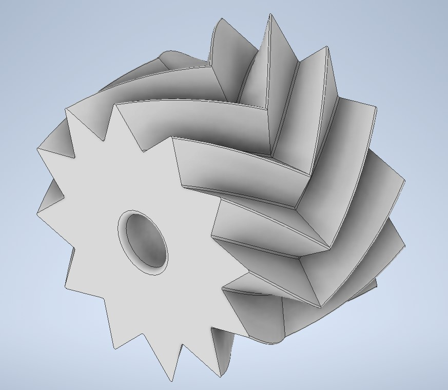 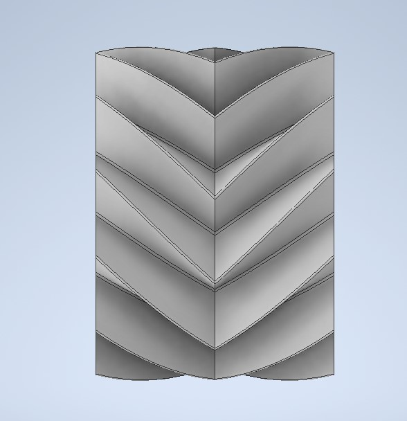Oftast hafa laufabrauðsjárn kúlur á endanum á handfanginu en mig langaði að nýta þetta til þess að gera eitthvað flottara en ég held að það gæti komið ílla út úr prentununni. Ég ákvað því að í stað þess að hafa venjulega kúla þá vildi ég frekar hafa Truncated Icosahedron en það er heitið á forminu sem fótboltar eru. Ég fann alveg gífurlega hjálplegt youtube myndband af hvernig það ætti að búa til svona fótbolta í Inventor Youtube. Ég gerði tvær prufur fyrir svona bolta, annan gerði ég holan en hinn var heill í gegn. Holi boltinn kom ekki vel út þar sem hann náði ekki einu sinni að lifa af prentið þar sem prentarinn náði ekki að brúa bilin í lofti. Það var tvennt í boði eftir þessa prufu, það vara annað hvort að gera hann heilann eða hafa stuðning allstaðar en mig langaði ekki að hafa stuðning alstaðar þar sem það kemur ekki vel út og ég var ekki að fara hanna mína eiginn stuðning, svo ég gerði hann bara gegnheilann. Gegnheili boltinn kom annsi vel út svo ég ákvað að hafa hann sem skraut á enda handfangsins.
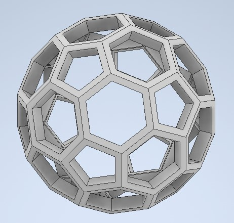 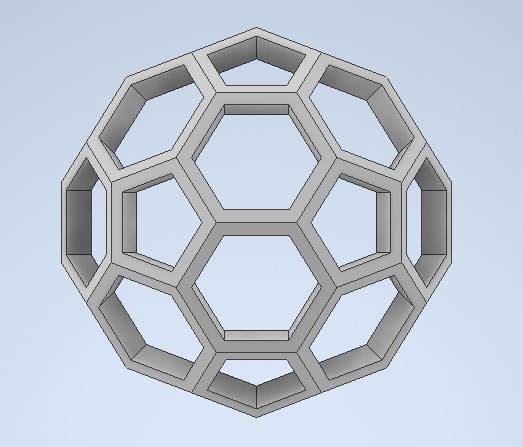 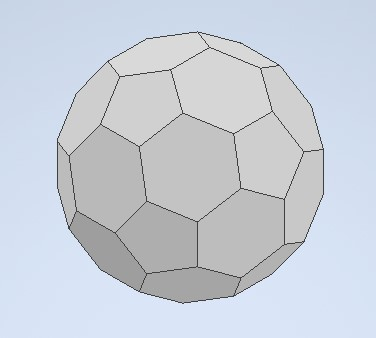 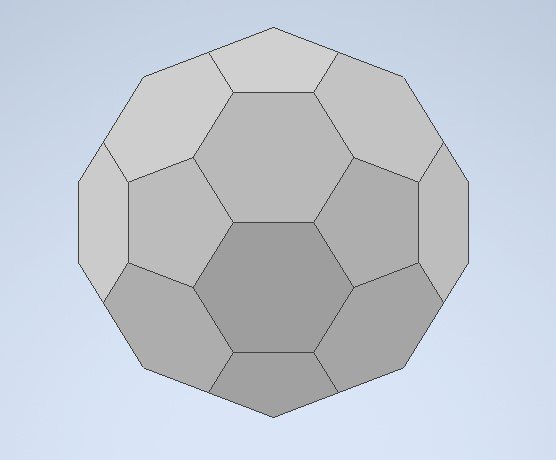Við uppsetningu og notkun á 3D prentaranum var notast við þetta Youtube myndband, en við vorum að notast við Prusa 3D prentara. Ég notaðist við Generic PLA efni með 0.15mm QUALITY, oftast var ég með 15% infill og ég var ekkert að fikta með hvors konar infill ég var með.
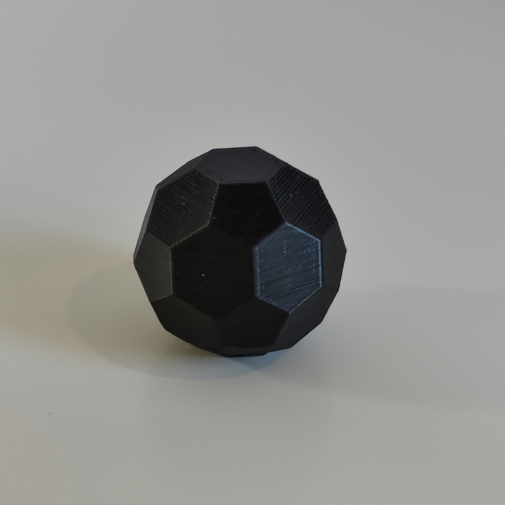
Það má sjá á hægri myndinni af 3D prentaða boltanum að hann kemur ágætlega út en ég ætlaði að prenta handfangið þannig út að það byrjar á boltanum síðan upp handfangið og svo hausinn fyrir hjólið.
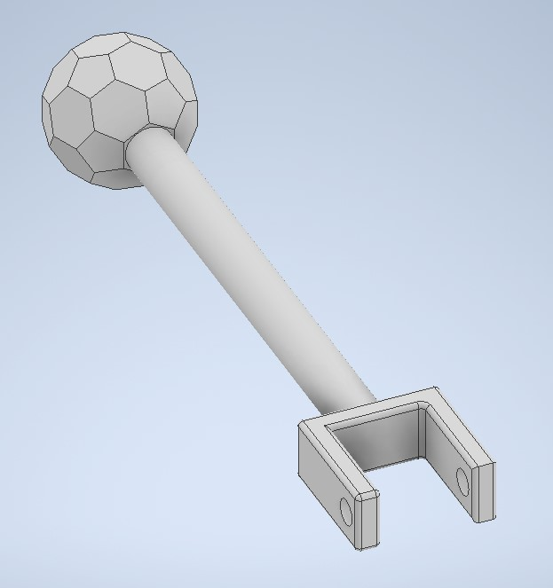 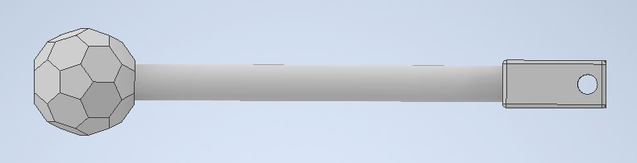Eftir að ég var búinn að hanna þessa hluti þá prentaði ég út hjólið með engum brim þar sem það gæti gert aðra hliðina ljótari. Eftir að prenta út hjólið þá prófaði ég að gera lítinn öxull sem var 0.1mm í þvermál til að sjá hvort það væri mikill núningur á milli hjólsins og öxulsins. Það alveg svínvirkaði og þar var lítill núningur þar á milli svo næsta skref var að hann öxul og festingu á móti honum til að festa hann við hausinn á handfanginu. Ég prófaði nokkrar lausnir en sú sem virkaði var að gera pinna með haus á öðrum endanum og gat fyrir smellu á hinum endanum.
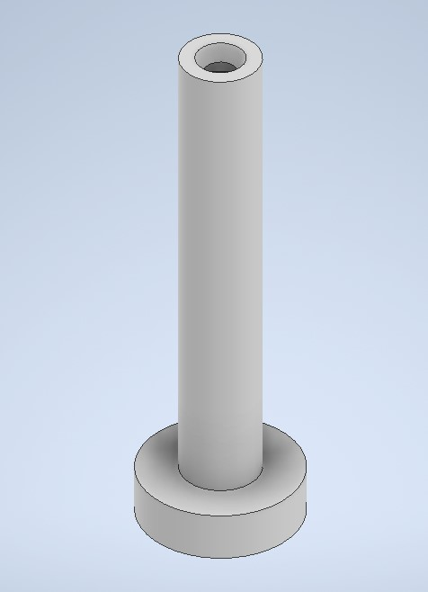 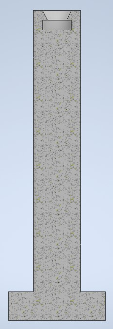 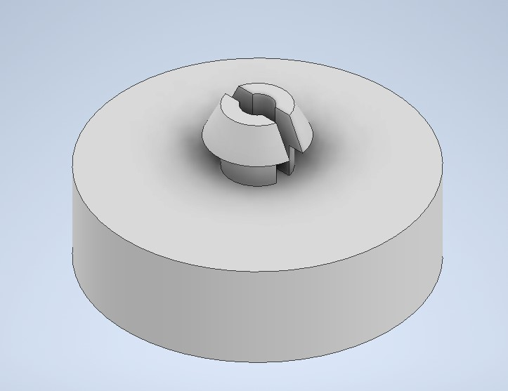Næst var því prentað út handfangið en þegar ég var að setja handfangið í Prusa forritið þá fékk ég ekki að velja að byrja að prenta útfrá boltanum heldur gat ég bara prentað hann á hlið, ég held að það er vegna þess að handfangið var of langt. Þrátt fyrir það þá ákvað ég að prenta hann á hlið og með stuðning alstaðar og bara vona það besta. Handfangið kom allt í lagi út nema fyrir botninn þar sem stuðningurinn var.
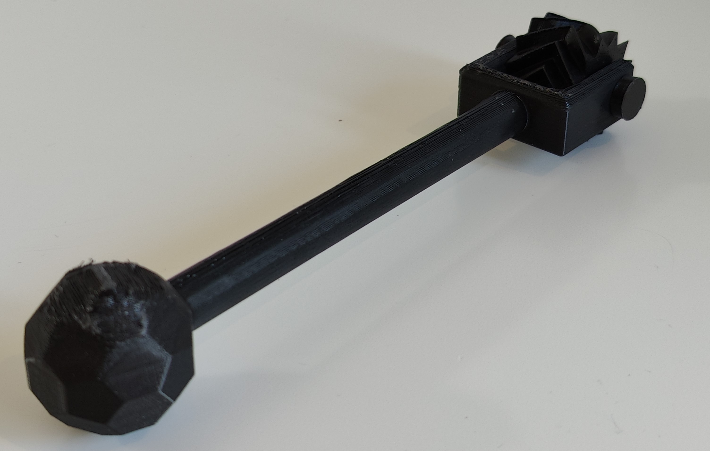 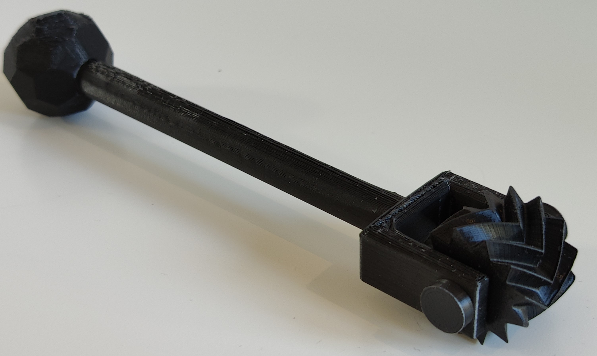 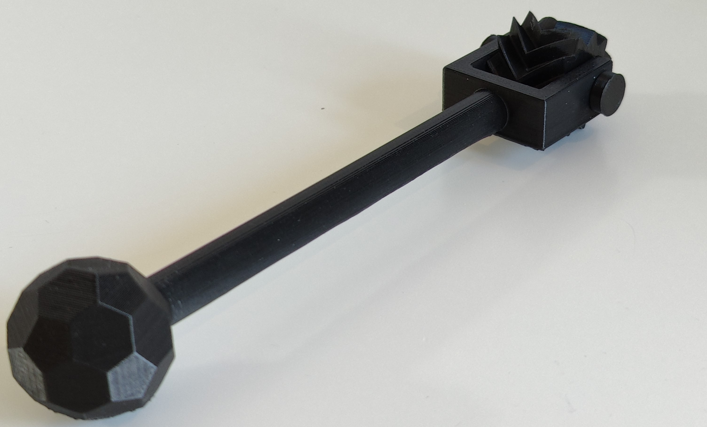Til að nálgast Viðeigandi skrám smelltu á hnappana:
Einnig er hægt að nálgast þeim á Thingiverse.
3D skönnun
3D skönnunar hlutinn af verkefninu var að láta okkur prófa að 3D skanna eitthvað. Ég ákvað í smá gríni að 3D skanna hundinn minn en ég vissi að það myndi vera vandamál að halda henni kjurrri þar sem hún á erfitt með það að vera kjurr ef maður er að gefa henni athygli. En þrátt fyrir það þá langið mér að prófa og sjá hvernig það myndi koma út. Ég notaðist við appið Polycam til að 3D skanna hundinn minn en maður þarf að borga til þess að fá að vista skjalið með eitthvað format, en það var hægt að deila myndbandi af skönnuninni.


Þetta er hún Þoka, hún er 6 ára Border Collie beint úr sveitinni. Hún elskar fátt meira en lifrapysla sem ég ætlaði að notast við til að halda henni kjurrri. Það reyndist vera mjög erfitt að halda henni kraf kjurri þar sem við höfum kennt henni að horfa alltaf í augun okkar þegar við erum að reyna að fá hana til að gera eitthvað fyrir okkur. Þess vegna fékk ég pabba minn til þess að hjálpa mér við að taka myndirnar svo hún horfir alltaf á hann í stað þess að horf á mig. Það gékk þó ekki þar sem hún byrjaði bara að horfa annað slagið á pabba minn svo á mig.
Eins og sést á myndbandinu þá gjörsamlega vantar á henni hausinn þótt að ég tók myndirnar þegar hún var að horfa á pabba minn. Svo það væri best að 3D skanna einhvern hlut sem hreyfist ekki þar sem búkurinn hennar kom frekar vel út.